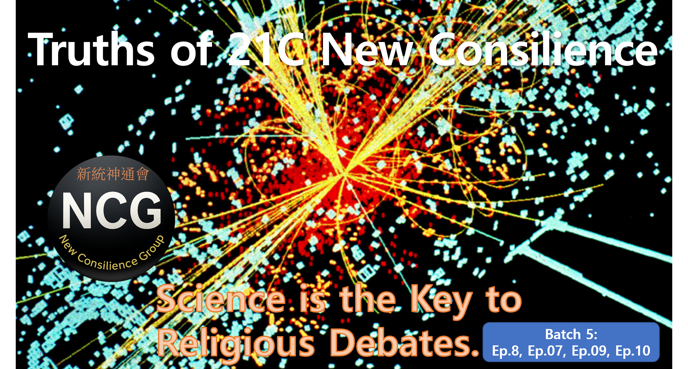

NCG Series – Batch 5: “Truths of 21C New Consilience”
Science is the key to religious debates.
For thousands of years, religions have generated countless debates,
each rooted in different doctrines.
Yet those questions have never reached a final and shared consensus.
Questions of God, the afterlife, the soul, and salvation are revisited—
not as myths, but as structures open to verification.
Science offers the key.
🧭 Batch 5 — Ep.08 · Ep.07 · Ep.09 · Ep.10
1️⃣ Ep.08 – Science and Religion in Consilience
The beliefs of the future must be built upon truth-based consilience.
▶ View Episode 08
2️⃣ Ep.07 – Nosome (無有) and Transmigration
Nosome does not vanish. It persists by shifting realms, changing only its form.
▶ View Episode 07
3️⃣ Ep.09 – Afterlife as Illusion, Transmigration as Reality
The afterlife is a myth. Transmigration is a physical reality.
▶ View Episode 09
4️⃣ Ep.10 – Oneness and Coexistence
If existence is one, love and coexistence are not choices—they are inevitabilities.
▶ View Episode 10